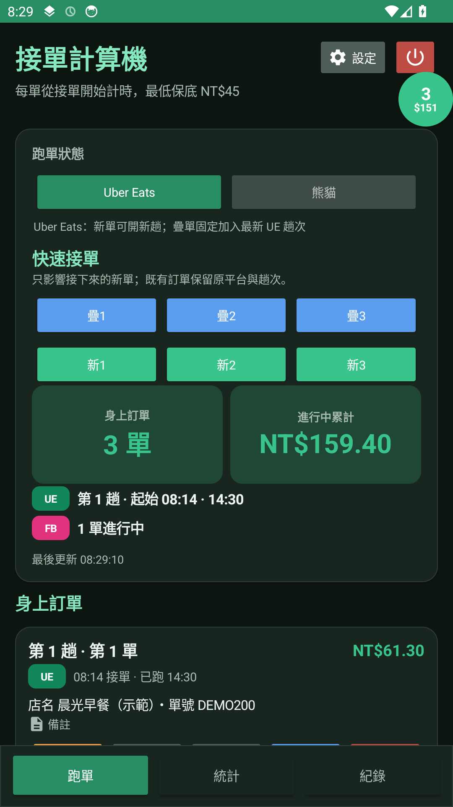

跑單頁與懸浮工具
可在跑單頁切換 UE／FB 並操作訂單，也可使用懸浮工具。UE 可建立新趟或疊入最新趟；每張單分別送達、取消與編輯內容。
為台灣外送工作者設計
新趟、疊單、逐單送達、快速截圖、店名與單號辨識、趟次軌跡和收入統計一次整理。資料以保存在你的手機為主。
目前公開版為 v1.0.19；v1.0.20（versionCode 21）已完成 Production 本地驗證，正在準備送審。正式版候選尚未公開前，使用者仍以 Google Play 提供的 v1.0.19 為準。

停妥車輛後快速操作
懸浮點同時顯示身上單量與目前總額，展開後可快速接單、精確送達與查看各趟資訊。
可在跑單頁切換 UE／FB 並操作訂單，也可使用懸浮工具。UE 可建立新趟或疊入最新趟；每張單分別送達、取消與編輯內容。
授權快速截圖後，懸浮視窗會暫時隱藏並保存目前畫面。可自行開關自動辨識，也能在訂單內容手動框選店名、單號或地址；多單無法明確配對時由你選擇。
記錄一趟的起始點和各張訂單的送達點，依實際送達順序顯示整趟導航軌跡。
同畫面查看五個時段、日週月統計與補給差額；選取單日後再開啟收入編輯，輸入後自動保存。基本報酬加成、小費與額外獎勵分開記錄。
v1.0.20 正式版候選
基本報酬加成、小費、額外獎勵不包含在「平台實際薪水」內，請分欄填寫。已收到總額會合計上述收入；預計補給只比較計算應得薪水與平台實際薪水，未填實際薪水時不推算補給。
實際操作畫面・截圖版本 v1.0.19
下列畫面於 2026-09-12 由 v1.0.19 測試廣告版模擬器實際拍攝，使用虛構店家、示範單號與金額，沒有真實外送資料；圖片未經 AI 生成或修改。


計算方式
每張單都各自套用同一套公式。疊三單時仍逐單計算，每張單各自享有最低保障。
更新前先備份
Google Play 台灣商店・v1.0.19
適用於台灣地區 18 歲以上外送工作者，Android 8.0 以上。免費下載，主 App 可能顯示廣告；懸浮工具不顯示廣告。